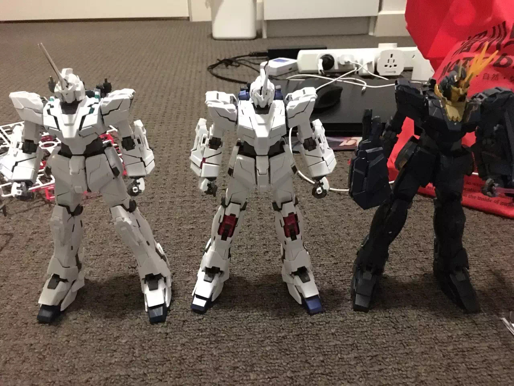

My name is Shaoguan Ye, and i have got a English name Logan as Shaoguan is not so friendly to pronounce. The student number of mine is s3658534 and obviously the school email is s3658534@rmit.student.edu.au. I came to Australia on 2012 December, the reason that I can remember so clearly is not only because it is my important day, but also back to 2012, there was a prediction that humanity was about to terminated on 25th December. I was feeling a bit stressed when the day has came, but eventually nothing happens, which leaves me not only relaxing but boring. Anyways, as I was born in GuangZhou, where Cantonese is originated, so I can speak both Mandarin and Cantonese since I was a child. And now, as I already lived in Australia for 8 years, I am feeling a bit familiar with English, but maybe not on oral. Also I always have interest in Japanese, as I often watch anime, so I can speak some common things in Japanese. Apparently, I am in the second year of Business information system, however I found myself having more passions and interest in IT instead, even though they are so familiar, but I still want to change to Bachelor of IT this year, hopefully everything works out successfully. About my hobby, it is actually related to one of the things that I am having passion to do----- building a robot model. When I was a kid, I really feel touched while watching the films or anime about robot. Therefore, I now always like to get some robot models that is in a scale of 1:100 or 1:144 to their original sizes to build.

To be honest in this part, I was not very interested in IT stuffs several years ago, back then I was willing to be a biologist. However, I found myself is terrible in Biology when I was in high school, then I change my idea to be a machanical engineer, then I found my physics is awful to be an engineer. When I lost all of my confidence in my study and future, I accidentally saw videos about hackers and robot AI design. I was feeling like I finally find the right things to do, that is IT, or back then I would say programmer. But the only IT skills that I have are those very common things, like turn the PC on and off or launching an app etc. The reasons I came to RMIT, is because RMIT stands for Royal Melbourne Institute of Technology University, that sounds full of technicality. Also I honestly believe that, it does not matter where you study but how you study and your attribute. So I am here in RMIT. If someone is asking what I am expecting to learn during my studies, I cannot tell the very accurate and academic terminology in terms of IT. What I can tell in this moment, is Networking skill mainly. But I do expect that I can create conditions, to prepare for and lay a good foundation of IT. That is the main reason that I come to RMIT.
https://www.seek.com.au/job/50400204?type=standard#searchRequestToken=65ec57c0-8d15-4d55-b872-183ea20cee44 Network Engineer is able to engage in designing, constructing, running, maintaining the particular network environment. In the video that inspires me to engage in IT says that, a hacker can also be a very good network engineer, this sparks me that network engineer in some way is a “hacker”, this is the initial idea of mine. However, as I understand the term networking better, I realize that networking is more than just that, it does not only include internet, IP address and anything simple, it is more about the basic concepts that hide under internet like ISO/OSI, NAT etc. ; all of the database skills, professional applications such as Oracle DB, MS SQL Server; OS like Windows and Linux. Not only software must be masted but also hardware such as server and SCSI card etc. Which makes the engineer of networking so important and respectful. That appeals me to be one of them. To be one of them is not as easy as I would type out with my keyboard, I am currently only having basic skills about MS SQL Server and Windows OS, which I can tell it is a long way to go to be a network engineer. I believe that RMIT will help me build the basic skills that I will need to be a network engineer, but I know that is not enough to be a satisfy network engineer. Currently, I will start looking for a job that is relevant to networking in order to get in touch in such field and to learn the skills that the school is not able to teach us. In the mean time, I can also gain experience through the working progress.If there is no such job, or I am not qualified to be employed, I have a plan B which is to participate in the training class that is for training actual network engineer, I believe I can learn the knowledge I need for networking. In conclusion, except for studying in school, I might put into practice or observe more knowledge to be a network engineer. Personal Profile
These results are mostly accurate, I am not an outgoing person, but I like learning new things. I do not feel like communicating very often, but I will try my best if necessary. In a group, I believe I am not being a leader but a listener or I would say a consultant, that gives suggestions and analyses. When forming a group, I will definitely be the one who is invited by a leader or project manager, I do not choose my teammates but I will achieve the best in my part and help others.
The project that I am strongly willing to do is to develop a game that is about robots fighting each other, and this is mean to be a maximum of 2 on 2 acting battle game.The basic context of this game is a war between two country in 2200s, players are able to drive different types of robot to fight. It should be available both online or offline, which means the players can either battle with AI or other players. The reason that I decide to participate in this project, is not only my personal willing but also to engage people to participate in such fields like mechanical engineer to explore more of talented people which may advance progress of developing AI robot. In other hand, a game can be made for pleasing the players. This project, as a game, the preliminary thoughts are :
For developing this game, Unity3D is the main engine that will be using. Also as this game needs hips of modeling and art resources, MATLAB is needed to build the modeling of robots. The skills that are needed in the software list above and developing the basic acting of the game included C++, C#, JAVA language. Certainly the use of Unity3D should be very familiar. For art and modelling, MATLAB is not redundant, the building skills of models are necessary. Once this project is successful, it should passionate many people to involve in the field of AI robot, the advancement of robot should be remarkable. At the mean time, this field might gain more investment to get more affect on the enhancement. In this time, AI robot will definitely be the future trends, people’s life will get better if the study of AI robot is advancing.